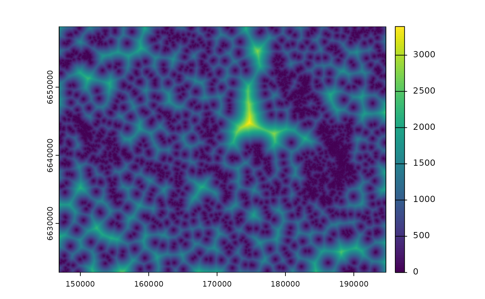
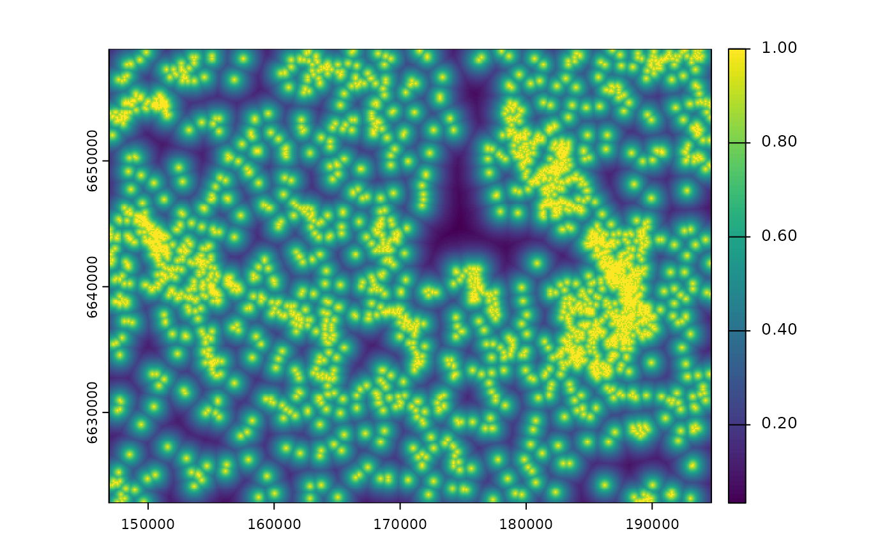
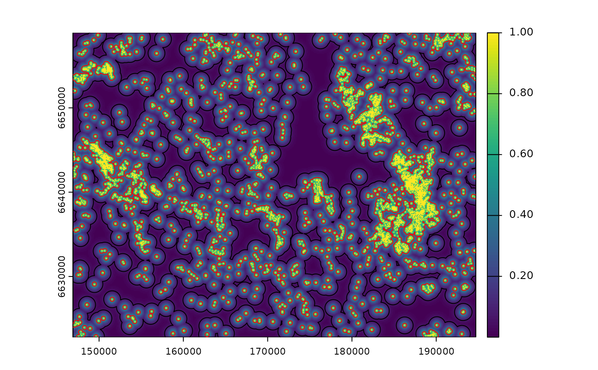
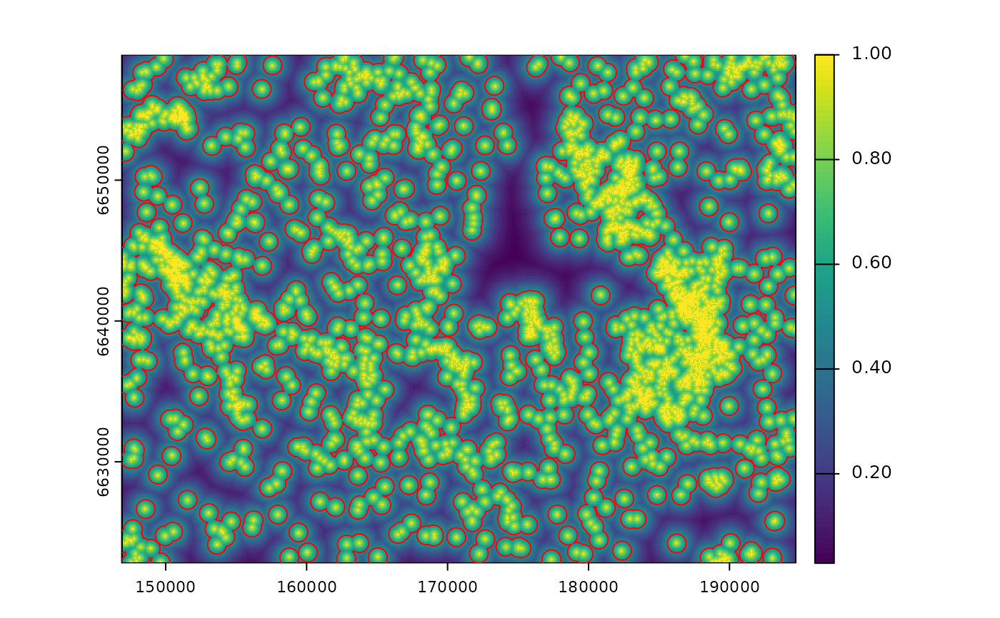
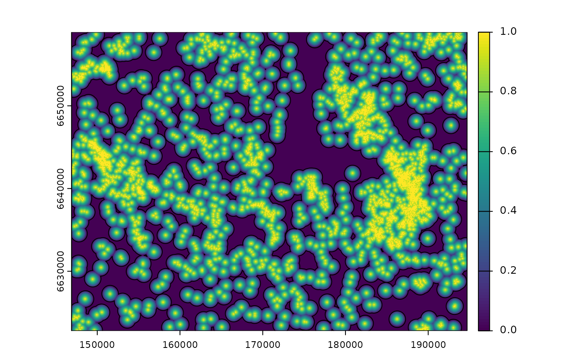
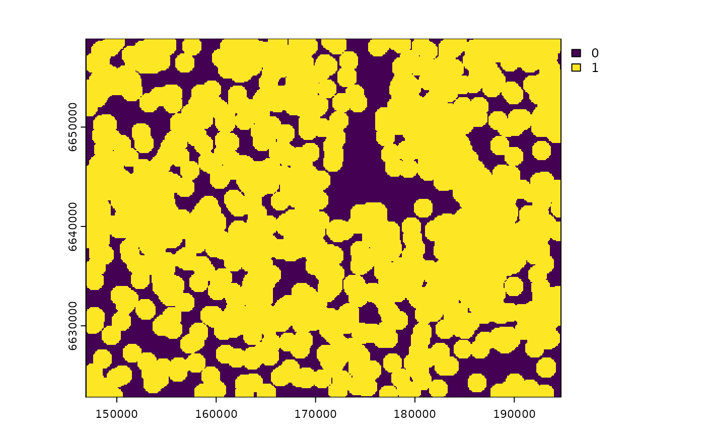
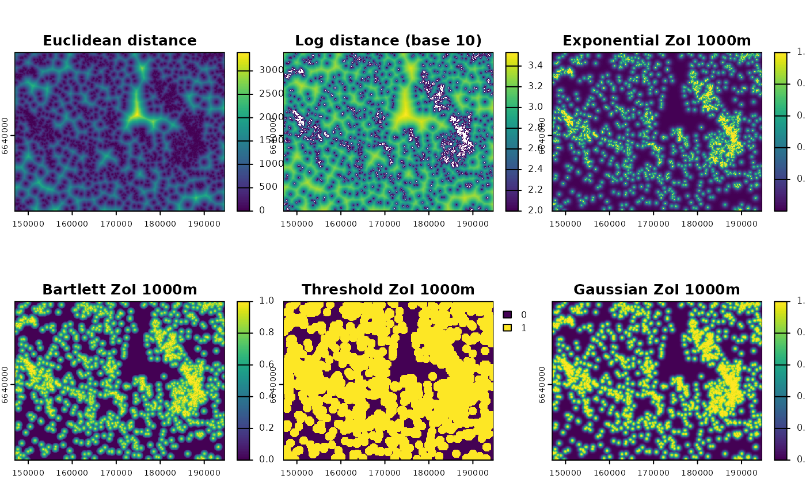

Calculate the zone of influence from the nearest feature
Source:R/calc_zoi_nearest.R
calc_zoi_nearest.RdThis function takes in a raster with locations or counts of
infrastructure and calculates a raster (or set of rasters, in case there is
more the one value for radius) representing the zone of influence (ZOI)
from the neareast feature of that type of infrastructure. Zones of influence
are defined by functions that decay with the distance from each
infrastructure and their rate of decay is controlled by the ZOI radius
(radius), which defines how far the influence of an infrastructure
feature goes. By default, the Gaussian decay ZOI is calculated, but other
decay shapes might be used (see zoi_functions() for examples).
The function might also return the distance to the nearest feature
or a transformation from it (e.g. log- and sqrt-distance from the nearest
feature).
The procedure might be computed in both R and GRASS GIS. In GRASS, it
requires an active connection between the R session and a GRASS GIS
location and mapset (through the package rgrass), and that the input
maps are already loaded within this GRASS GIS mapset.
If the calculations are done in R, the input is a (set of) raster map(s)
and the function returns another (set of) raster map(s). If the calculations
are done within GRASS GIS, the input is the name of a raster map already
loaded in a GRASS GIS location and mapset, and the function returns
only the name of the output map. This map is stored in the GRASS GIS
location/mapset, and might be retrieved to R through the
rgrass::read_RAST() function or exported outside GRASS using the
r.out.gdal module, for instance.
Usage
calc_zoi_nearest(
x,
radius = NULL,
type = c("Gauss", "exp_decay", "bartlett", "half_norm", "threshold", "step",
"euclidean", "log", "sqrt")[1],
where = c("R", "GRASS")[1],
intercept = 1,
zoi_limit = 0.05,
lambda = NULL,
log_base = exp(1),
dist_offset = 0,
zeroAsNA = FALSE,
extent_x_cut = NULL,
extent_y_cut = NULL,
g_output_map_name = NULL,
g_dist_metric = c("euclidean", "geodesic", "squared", "maximum", "manhattan")[1],
g_input_as_region = FALSE,
g_remove_intermediate = TRUE,
g_print_expression = FALSE,
g_overwrite = FALSE,
verbose = FALSE,
...
)Arguments
- x
[RasterLayer,SpatRaster]
Raster representing locations of features, preferentially with positive value where the features are located and NA elsewhere. Alternatively,xmight be a binary (dummy) spatial variable representing the presence of linear or area features, with NA/no-data as background.xcan be aRasterLayerfrom raster package or a SpatRaster from terra package. Ifwhere = "GRASS",xmust be a string corresponding to the name of the input map within a GRASS GIS location and mapset.The input raster
xshould have positive values in the pixels where infrastructure are located and NA/no-data in all other places. In R it is also possible to have zeros as the background and setzeroAsNA = TRUEfor the computation of the ZOI of the nearest feature. In GRASS, maps without NA as background might be prepared as input forcalc_zoi_nearest()through raster algebra and e.g. through the use of the moduler.null.- radius
[numeric(1)]
Radius of the zone of influence (ZOI), the distance at which the ZOI vanishes or goes below a given minimum limit valuezoi_limit. Seezoi_functions()for details. It can be a single value or a vector of values, in which case several ZOI layers (one for each radius) are created. This parameter is ignored iftype = "euclidean",type = "log", ortype = "sqrt".- type
[character(1)="Gauss"]{"Gauss", "exp_decay", "bartlett", "threshold", "step", "euclidean", "log","sqrt"}
Shape of the zone of influence:If
Gaussorhalf_norm, the ZOI follows a half-normal shape:intercept * exp(-lambda * (euclidean_distance^2)).interceptandlambdaare parameters to be defined – seezoi_functions()for details.If
exp_decay, the ZOI follows an exponential decay shape:intercept * exp(-lambda * euclidean_distance).interceptandlambdaare parameters to be defined – seezoi_functions()for details.If
bartlett,linear_decay, ortent_decay, the ZOI follows a linear decay shape within the ZOI radius (radius).If
thresholdorstep, a constant influence is considered within the zone of influence radius (radius). All pixels closer thanradiusto infrastructure are considered as "under the influence" of the nearest feature, with a constant influence value defined by theinterceptparameter, and all other pixels are assumed to have zero influence.If
euclidean, the function returns the Euclidean distance as a proxy for the ZOI, even though a proper zone of influence is not defined in this case.If
log, the function returns the log-distance:log(euclidean_distance, base = log_base)as a proxy for the ZOI, even though a proper zone of influence is not defined in this case.If
sqrt, the functions returns the square rooted distance:sqrt(euclidean_distance)as a proxy for the ZOI, even though a proper zone of influence is not defined in this case.
See details below. Other options still to be implemented (such as other functions and a generic user-defined ZOI function as input).
- where
[character(1)="R"]{"R", "GRASS"}
Where should the computation be done? Default is"R". Ifwhere = "GRASS", the R session must be linked to an open GRASS GIS session in a specific location and mapset.- intercept
[numeric(1)=1]
Maximum value of the ZOI functions at when the distance from disturbance sources is zero (x = 0). For thethreshold_decayandstep_decayfunctions,interceptis the constant value of the Zone of Influence within the ZOIradius. For the other ZOI functions,interceptis the value of the functions at the origin (where the sources of disturbance are located, i.e.x = 0). Default isintercept = 1. This parameter is ignored iftype = "euclidean",type = "log", ortype = "sqrt".- zoi_limit
[numeric(1)=0.05]
For non-vanishing functions (e.g.exp_decay,gaussian_decay), this value is used to set the relationship between the ZOI radius and the decay functions:radiusis defined as the minimum distance at which the ZOI assumes values belowzoi_limit. The default is 0.05. This parameter is used only ifradiusis notNULL.- lambda
[numeric(2)=NULL]
For the Gaussian and exponential decay functions (type = "Gauss"andtype = "exp_decay"),lambdais the decay parameter of the function. Notice that the interpretation oflambdais different depending on the the function – seezoi_functions()for definitions. For the Gaussian decay function, the value forlambdais only considered if bothradius = NULLandsigma = NULL. For the exponential decay function, the value forlambdais only considered if bothradius = NULLandhalf_life = NULL.- log_base
[numeric(1)=exp(1)]
Base of the logarithm, iftype = log.- dist_offset
[numeric(1)=0]
Number to add to the Euclidean distance before transforming it, to avoid-Inf/Infvalues (e.g. in the case of log transformation). It should be a very small value compared to the range of values of Euclidean distance, not to influence any further analyses.- zeroAsNA
[logical(1)=FALSE]
IfTRUEtreats cells that are zero as if they wereNA. Only used for computations in R (where = R).- extent_x_cut, entent_y_cut
[numeric vector(2)=NULL]
Vector representing the minimum and maximum extent in x and y for the final output, in the format c(min,max). It is intended to keep only a region of interest, for standardizing the parameters and region when comparing the resulting ZOI maps with the cumulative ZOI, calculated throughcalc_zoi_cumulative(). IfNULL(default), this parameter is ignored.- g_output_map_name
[character(1)=NULL]
Name of the output map name, to be used only within GRASS (ifwhere = "GRASS"). By default, this isNULLand the output map names are a concatenation of the input map name (e.g."map_houses") and the decay function and radius used (e.g. fortype = "exp_decay"andradius = 1000, the name would be"map_houses_exp_decay1000"). This parameter is ignored when the calculations are performed in R (where = "R").- g_dist_metric
[character(1)="euclidean"]{"euclidean", "geodesic", "squared", "maximum", "manhattan"}
If the calculations are perfomed within GRASS GIS, this is themetricargument to calculate the distance from the infrastructure features with the moduler.grow.distance. More information at the GRASS GIS documentation for this function. This parameter is ignored when the calculations are performed in R (where = "R").- g_input_as_region
[logical(1)=FALSE]
Should the input mapxbe used to redefine the working region in GRASS before the ZOI calculation? IfTRUE,xis used to define the region withg.region. IfFALSE, the region previously defined in the GRASS GIS session is used for computation. Default isFALSE. This parameter is ignored when the calculations are performed in R (where = "R").- g_remove_intermediate
[logical(1)=TRUE]
Should the intermediate maps created for computing the output map be excluded in the end of the process? Only used whenwhere = "GRASS".- g_print_expression
[logical(1)=FALSE]
Should the expression for transforming the raster of distance into ZOI values should be printed in the prompt? Only used whenwhere = "GRASS"andverbose = TRUEfor debugging the result ofr.mapcalc.- g_overwrite
[logical(1)=FALSE]
If the a map already exists with the nameg_output_map_namein the working GRASS GIS location and mapset, should it be overwritten? Only used whenwhere = "GRASS".- verbose
[logical(1)=FALSE]
Should messages of the computation steps be printed in the prompt along the computation?- ...
Adittional parameters passed toterra::distance()or to the ZOI functions (seezoi_functions()) when the calculations are performed in R. No additional parameters implemented for computation in GRASS GIS.
Value
If the calculations are performed in R (where = "R"), the function
returns a RasterLayer (or SpatRaster, according to the class of the input
object) with the zone of influence of the nearest feature. If multiple values
of radius are provided, a stack of rasters is returned.
If the calculations are performed in GRASS GIS (where = "GRASS"),
the maps are kept only within the GRASS GIS location/mapset and the function
returns the name of the calculated maps.
If the computation is done in GRASS GIS, the output is name of
the output raster map(s) within the GRASS GIS location and mapset of the
current session. The user can retrieve these maps to R using
rgrass::read_RAST or export them outside GRASS using the
r.out.gdal module, for instance.
Details
In practice, the function calc_zoi_nearest() first calculates the distance from each
pixel to the nearest feature and then transforms it according to the ZOI
functions. In R, calc_zoi_nearest() makes use of the terra::distance()
function and the following procedures are made through raster algebra.
In GRASS, the module
r.grow.distance
is used to calculate the Euclidean distance from
the nearest feature and
r.mapcalc.simple
to transform the distance into the different ZOI of the nearest feature.
The input raster x should have positive values in the pixels where
infrastructure are located and NA/no-data in all other places.
The input raster is supposed to
represent the location of point, line, or polygon infrastructure
(e.g. houses, roads, mining areas), but any landscape variable whose
representation might be one of those would fit here
(e.g. areas of forest or any other habitat type or land cover).
We recommend that the input raster has a metric projection, so that distances
and zones of influence are based on distance to infrastructure measured in meters.
See also
See zoi_functions() for some ZOI function shapes.
See also terra::distance() for details on the calculation of the distance
to the nearest future in R.
See
r.grow.distance,
for details on the calculation of the distance to the nearest future in GRASS.
See calc_zoi_cumulative() for the computation of the cumulative
zone of influence and density of multiple features.
Examples
# Running calc_zoi_nearest through R
library(terra)
library(sf)
#> Linking to GEOS 3.12.1, GDAL 3.8.4, PROJ 9.4.0; sf_use_s2() is TRUE
# Load raster data
f <- system.file("raster/sample_area_cabins.tif", package = "oneimpact")
cabins <- terra::rast(f)
# Load vector data
f2 <- system.file("vector/sample_area_cabins.gpkg", package = "oneimpact")
cabins_vect <- sf::st_read(f2)
#> Reading layer `sample_area_cabins' from data source
#> `/home/runner/work/_temp/Library/oneimpact/vector/sample_area_cabins.gpkg'
#> using driver `GPKG'
#> Simple feature collection with 6875 features and 4 fields
#> Geometry type: POINT
#> Dimension: XY
#> Bounding box: xmin: 146900.1 ymin: 6622822 xmax: 194694.6 ymax: 6658891
#> Projected CRS: ETRS89 / UTM zone 33N
# calculate distance to the nearest feature
d <- calc_zoi_nearest(cabins, type = "euclidean")
plot(d)

# calculate log_dist (the rest is equal)
log_d <- calc_zoi_nearest(cabins, type = "log", log_base = 10)
plot(log_d)
# calculate sqrt_dist
sqrt_d <- calc_zoi_nearest(cabins, type = "sqrt")
plot(sqrt_d)
# calculate exponential decay zone of influence
# using exp_decay_parms parameter
exp_d1 <- calc_zoi_nearest(cabins, type = "exp_decay",
intercept = 1, lambda = 0.001)
plot(exp_d1)

# calculate exponential decay zone of influence using
# radius and zoi_limit (default)
radius2 <- 1000 # zoi = 1000m
zoi_limit2 <- 0.05 # here zoi is the distance where the function reaches 0.05
exp_d2 <- calc_zoi_nearest(cabins, type = "exp_decay", radius = radius2,
zoi_limit = zoi_limit2)
plot(exp_d2)
# buffer
# zoi = 1000m
cabins_vect |>
sf::st_buffer(dist = radius2) |>
sf::st_union() |>
plot(add = T, border = "black")
legend("bottomright", legend = c("ZoI radius"), col = c("black"), lwd = 1.1)
# calculate exponential decay zone of influence using half life parameter
# if half_life = 250 m and zoi_hl_ratio = 4, zoi is 1000 m
half_life3 <- 250 # intensity gets down to 1/16 = 0.06 for 4*half_life=1000m
zoi_hl_ratio3 <- 4 # default
exp_d4 <- calc_zoi_nearest(cabins, type = "exp_decay", half_life = half_life3,
zoi_hl_ratio = zoi_hl_ratio3)
plot(exp_d4)
# buffer
cabins_vect |>
sf::st_buffer(dist = half_life3) |>
sf::st_union() |>
plot(add = T, border = "red")
# zoi = 1000m
cabins_vect |>
sf::st_buffer(dist = half_life3*zoi_hl_ratio3) |>
sf::st_union() |>
plot(add = T, border = "black")
legend("bottomright", legend = c("Exponential half-life", "ZoI radius"),
col = c("red", "black"), lwd = 1.1)

# calculate exponential decay zone of influence using
# radius parameter and zoi_hl_ratio
radius4 <- 4000 # intensity gets down to 1/16 = 0.06 for zoi = 4000m, half_life = 1000m
zoi_hl_ratio4 <- 6 # default
exp_d4 <- calc_zoi_nearest(cabins, type = "exp_decay", radius = radius4,
zoi_hl_ratio = zoi_hl_ratio4)
plot(exp_d4)
# buffer
# half_life = 1000m
cabins_vect |>
sf::st_buffer(dist = radius4/zoi_hl_ratio4) |>
sf::st_union() |>
plot(add = T, border = "red")
# zoi = 4000m
cabins_vect |>
sf::st_buffer(dist = radius4) |>
sf::st_union() |>
plot(add = T, border = "black", )
legend("bottomright", legend = c("Exponential half-life", "ZoI radius"),
col = c("red", "black"), lwd = 1.1)

#---
# bartlett influence, ZOI = 1000m
bart_d <- calc_zoi_nearest(cabins, type = "bartlett", radius = 1000)
plot(bart_d)
# buffer 1000m
cabins_vect |>
sf::st_buffer(dist = 1000) |>
sf::st_union() |>
plot(add = T, border = "black")
legend("bottomright", legend = c("Bartlett ZoI 1000m"),
col = c("black"), lwd = 1.1)

# calculate threshold influence, ZoI = 1000m
d <- calc_zoi_nearest(cabins, type = "threshold", radius = 1000)
plot(d)

# Gaussian decay influence, ZoI = 1000m
g_d <- calc_zoi_nearest(cabins, type = "Gauss", radius = 1000)
plot(g_d)
# buffer 1000m
cabins_vect |>
sf::st_buffer(dist = 1000) |>
sf::st_union() |>
plot(add = T, border = "black")
legend("bottomright", legend = c("Gaussian ZoI 1000m"),
col = c("black"), lwd = 1.1)
#--------------------
# Running calc_zoi_nearest through GRASS GIS
library(rgrass)
library(terra)
# Load raster data
f <- system.file("raster/sample_area_cabins.tif", package = "oneimpact")
cabins <- terra::rast(f)
# connect to grass gis and create grass location
# For linux or within OSGeo4W shell
grassdir <- system("grass --config path", intern = TRUE)
# grassdir <- system("grass78 --config path", intern = TRUE) # for GRASS 7.8
# If you used the standalone installer in Windows
# grassdir <- "C:\Programs\GRASS GIS 7.8" # Correct if the path GRASS version or path is different
gisDB <- "." # create location and mapset in the working directory
loc <- "ETRS_33N/" # name of the location
ms <- "PERMANENT" # name of the mapset
rgrass::initGRASS(gisBase = grassdir,
SG = cabins, # use map to define location projection
home = tempdir(),
override = TRUE,
gisDbase = gisDB,
location = loc,
mapset = ms)
#> gisdbase .
#> location ETRS_33N/
#> mapset PERMANENT
#> rows 361
#> columns 478
#> north 6658900
#> south 6622800
#> west 146900
#> east 194700
#> nsres 100
#> ewres 100
#> projection:
#> PROJCRS["unknown",
#> BASEGEOGCRS["grs80",
#> DATUM["European Terrestrial Reference System 1989",
#> ELLIPSOID["Geodetic_Reference_System_1980",6378137,298.257222101,
#> LENGTHUNIT["metre",1]],
#> ID["EPSG",6258]],
#> PRIMEM["Greenwich",0,
#> ANGLEUNIT["degree",0.0174532925199433,
#> ID["EPSG",9122]]]],
#> CONVERSION["Transverse Mercator",
#> METHOD["Transverse Mercator",
#> ID["EPSG",9807]],
#> PARAMETER["Latitude of natural origin",0,
#> ANGLEUNIT["degree",0.0174532925199433],
#> ID["EPSG",8801]],
#> PARAMETER["Longitude of natural origin",15,
#> ANGLEUNIT["degree",0.0174532925199433],
#> ID["EPSG",8802]],
#> PARAMETER["Scale factor at natural origin",0.9996,
#> SCALEUNIT["unity",1],
#> ID["EPSG",8805]],
#> PARAMETER["False easting",500000,
#> LENGTHUNIT["metre",1],
#> ID["EPSG",8806]],
#> PARAMETER["False northing",0,
#> LENGTHUNIT["metre",1],
#> ID["EPSG",8807]]],
#> CS[Cartesian,2],
#> AXIS["easting",east,
#> ORDER[1],
#> LENGTHUNIT["metre",1,
#> ID["EPSG",9001]]],
#> AXIS["northing",north,
#> ORDER[2],
#> LENGTHUNIT["metre",1,
#> ID["EPSG",9001]]]]
# define map name within GRASS GIS
cabins_g <- "cabins_example"
# add file to GRASS GIS mapset
rgrass::write_RAST(cabins, cabins_g, flags = c("overwrite", "o"))
#> Warning: The command:
#> r.in.gdal --overwrite -o input=/home/runner/work/_temp/Library/oneimpact/raster/sample_area_cabins.tif output=cabins_example
#> produced at least one warning during execution:
#> WARNING: Raster map <cabins_example> already exists and will be overwritten
#> Over-riding projection check
#> Importing raster map <cabins_example>...
#> 0% 3% 6% 9% 12% 15% 18% 21% 24% 27% 30% 33% 36% 39% 42% 45% 48% 51% 54% 57% 60% 63% 66% 69% 72% 75% 78% 81% 84% 87% 90% 93% 96% 99% 100%
#> WARNING: Raster map <cabins_example> already exists and will be overwritten
#> Over-riding projection check
#> Importing raster map <cabins_example>...
#> 0% 3% 6% 9% 12% 15% 18% 21% 24% 27% 30% 33% 36% 39% 42% 45% 48% 51% 54% 57% 60% 63% 66% 69% 72% 75% 78% 81% 84% 87% 90% 93% 96% 99% 100%
#> SpatRaster read into GRASS using r.in.gdal from file
# check
terra::plot(cabins, col = "black",
main = "Map of tourist cabins")
#---
# define region in GRASS GIS
rgrass::execGRASS("g.region", raster = cabins_g,
flags = "p")
#> projection: 99 (unknown)
#> zone: 0
#> datum: etrs89
#> ellipsoid: grs80
#> north: 6658900
#> south: 6622800
#> west: 146900
#> east: 194700
#> nsres: 100
#> ewres: 100
#> rows: 361
#> cols: 478
#> cells: 172558
# Input map name within GRASS GIS
cabins_g
#> [1] "cabins_example"
# Exponential decay ZoI=1000m
expdecay_name <- calc_zoi_nearest(cabins_g, type = "exp_decay",
radius = 1000,
where = "GRASS",
g_verbose = FALSE, g_overwrite = TRUE)
#> Removing raster <cabins_example_zoi_nearest_euclidean>
# Bartlett decay ZoI=1000m
bartlett_name <- calc_zoi_nearest(cabins_g, type = "bartlett",
radius = 1000,
where = "GRASS", g_verbose = FALSE, g_overwrite = TRUE)
#> Removing raster <cabins_example_zoi_nearest_euclidean>
# Threshold influence ZoI = 1000m
threshold_name <- calc_zoi_nearest(cabins_g, type = "threshold",
radius = 1000,
where = "GRASS", g_verbose = FALSE, g_overwrite = TRUE)
#> Removing raster <cabins_example_zoi_nearest_euclidean>
# Gaussian influence ZoI = 1000m
gaussian_name <- calc_zoi_nearest(cabins_g, type = "Gauss",
radius = 1000,
where = "GRASS", g_verbose = FALSE, g_overwrite = TRUE)
#> Removing raster <cabins_example_zoi_nearest_euclidean>
# Log-distance
log_name <- calc_zoi_nearest(cabins_g, type = "log", log_base = 10,
where = "GRASS",
g_verbose = FALSE, g_overwrite = TRUE)
#> Removing raster <cabins_example_zoi_nearest_euclidean>
# Euclidean
euclidean_name <- calc_zoi_nearest(cabins_g, type = "euclidean",
where = "GRASS",
g_verbose = FALSE, g_overwrite = TRUE)
(all_names <- c(euclidean_name, log_name, expdecay_name,
bartlett_name, threshold_name, gaussian_name))
#> [1] "cabins_example_zoi_nearest_euclidean"
#> [2] "cabins_example_zoi_nearest_log"
#> [3] "cabins_example_zoi_nearest_exp_decay1000"
#> [4] "cabins_example_zoi_nearest_bartlett1000"
#> [5] "cabins_example_zoi_nearest_threshold1000"
#> [6] "cabins_example_zoi_nearest_Gauss1000"
# visualize
cabins_zoi_nearest <- rgrass::read_RAST(all_names, return_format = "terra")
#> Checking GDAL data type and nodata value...
#> 2% 5% 8% 11% 14% 17% 20% 23% 26% 29% 32% 35% 38% 41% 44% 47% 50% 53% 56% 59% 62% 65% 68% 71% 74% 77% 80% 83% 86% 89% 92% 95% 98% 100%
#> Using GDAL data type <Float64>
#> Exporting raster data to RRASTER format...
#> 2% 5% 8% 11% 14% 17% 20% 23% 26% 29% 32% 35% 38% 41% 44% 47% 50% 53% 56% 59% 62% 65% 68% 71% 74% 77% 80% 83% 86% 89% 92% 95% 98% 100%
#> r.out.gdal complete. File </tmp/RtmpXUdBg8/file26cb636d8d5a.grd> created.
#> Checking GDAL data type and nodata value...
#> 2% 5% 8% 11% 14% 17% 20% 23% 26% 29% 32% 35% 38% 41% 44% 47% 50% 53% 56% 59% 62% 65% 68% 71% 74% 77% 80% 83% 86% 89% 92% 95% 98% 100%
#> Using GDAL data type <Float64>
#> Exporting raster data to RRASTER format...
#> 2% 5% 8% 11% 14% 17% 20% 23% 26% 29% 32% 35% 38% 41% 44% 47% 50% 53% 56% 59% 62% 65% 68% 71% 74% 77% 80% 83% 86% 89% 92% 95% 98% 100%
#> r.out.gdal complete. File </tmp/RtmpXUdBg8/file26cb5cdee41f.grd> created.
#> Checking GDAL data type and nodata value...
#> 2% 5% 8% 11% 14% 17% 20% 23% 26% 29% 32% 35% 38% 41% 44% 47% 50% 53% 56% 59% 62% 65% 68% 71% 74% 77% 80% 83% 86% 89% 92% 95% 98% 100%
#> Using GDAL data type <Float64>
#> Exporting raster data to RRASTER format...
#> 2% 5% 8% 11% 14% 17% 20% 23% 26% 29% 32% 35% 38% 41% 44% 47% 50% 53% 56% 59% 62% 65% 68% 71% 74% 77% 80% 83% 86% 89% 92% 95% 98% 100%
#> r.out.gdal complete. File </tmp/RtmpXUdBg8/file26cb46c37707.grd> created.
#> Checking GDAL data type and nodata value...
#> 2% 5% 8% 11% 14% 17% 20% 23% 26% 29% 32% 35% 38% 41% 44% 47% 50% 53% 56% 59% 62% 65% 68% 71% 74% 77% 80% 83% 86% 89% 92% 95% 98% 100%
#> Using GDAL data type <Float64>
#> Exporting raster data to RRASTER format...
#> 2% 5% 8% 11% 14% 17% 20% 23% 26% 29% 32% 35% 38% 41% 44% 47% 50% 53% 56% 59% 62% 65% 68% 71% 74% 77% 80% 83% 86% 89% 92% 95% 98% 100%
#> r.out.gdal complete. File </tmp/RtmpXUdBg8/file26cb360ffe57.grd> created.
#> Checking GDAL data type and nodata value...
#> 2% 5% 8% 11% 14% 17% 20% 23% 26% 29% 32% 35% 38% 41% 44% 47% 50% 53% 56% 59% 62% 65% 68% 71% 74% 77% 80% 83% 86% 89% 92% 95% 98% 100%
#> Using GDAL data type <Float64>
#> Exporting raster data to RRASTER format...
#> 2% 5% 8% 11% 14% 17% 20% 23% 26% 29% 32% 35% 38% 41% 44% 47% 50% 53% 56% 59% 62% 65% 68% 71% 74% 77% 80% 83% 86% 89% 92% 95% 98% 100%
#> r.out.gdal complete. File </tmp/RtmpXUdBg8/file26cb63d9fb1c.grd> created.
#> Checking GDAL data type and nodata value...
#> 2% 5% 8% 11% 14% 17% 20% 23% 26% 29% 32% 35% 38% 41% 44% 47% 50% 53% 56% 59% 62% 65% 68% 71% 74% 77% 80% 83% 86% 89% 92% 95% 98% 100%
#> Using GDAL data type <Float64>
#> Exporting raster data to RRASTER format...
#> 2% 5% 8% 11% 14% 17% 20% 23% 26% 29% 32% 35% 38% 41% 44% 47% 50% 53% 56% 59% 62% 65% 68% 71% 74% 77% 80% 83% 86% 89% 92% 95% 98% 100%
#> r.out.gdal complete. File </tmp/RtmpXUdBg8/file26cbcce7a39.grd> created.
title_plot <- c("Euclidean distance", "Log distance (base 10)",
"Exponential ZoI 1000m", "Bartlett ZoI 1000m",
"Threshold ZoI 1000m", "Gaussian ZoI 1000m")
terra::plot(cabins_zoi_nearest, main = title_plot)

# remove rasters created
# to_remove_rast <- c(all_names)
# rgrass::execGRASS("g.remove", type = "rast", name = to_remove_rast, flags = "f")